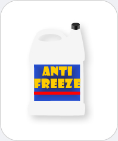

|  |
Antifreeze
Chemicals you may find: Ethylene glycol Methanol Propylene glycol |
|
Antifreeze is a liquid-coolant used in gasoline and diesel engines. This water-based compound is mixed with substances that reduce the freezing point of the mixture to a temperature below that of which an engine may be exposed. Antifreeze is also used to inhibit the corrosion of engine cooling systems, which can contain aluminum, iron, copper, and lead. Methanol was the most widely used antifreeze until the 1930s when it was found that the coolant actually was less effective than water and ethylene glycol was then employed as the main ingredient.
Ethylene glycol antifreeze is poisonous and should be kept out of the reach of children and animals, as this chemical is known to form calcium oxalate crystals in the kidneys which may result in renal failure and/or death. Due to the toxicity of ethylene glycol, a bittering agent, denatonium benzoate, is generally added to the antifreeze to discourage ingestion. Propylene glycol has also been used in antifreeze and it is considerably less toxic. This type of antifreeze is commonly used in areas where ethylene glycol use is hazardous such as in pipes of homes or in food-processing systems. This substance may also be found in foods, medicines, and cosmetics where it is employed as a binding agent. |
|